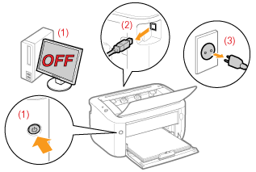

|
ADVERTENCIA
|
|
No instale la impresora en un lugar cerca de alcohol, disolvente u otras sustancias inflamables. Si alguna sustancia inflamable entrara en contacto con los componentes eléctricos del interior de la impresora, se podría provocar un incendio o una descarga eléctrica.
No coloque ninguno de los objetos siguientes sobre la impresora.
Collares y otros objetos metálicos
Tazas, jarrones, macetas y otros contenedores llenos de agua o líquidos
Si estos objetos entraran en contacto con un área de alto voltaje del interior de la impresora, podrían provocar un incendio o una descarga eléctrica.
Si se cayeran o derramaran al interior de la impresora, apague inmediatamente el interruptor de alimentación (1) y desconecte los cables de interfaz si están conectados (2). A continuación, desconecte el enchufe de la toma de corriente de CA (3) y póngase en contacto con su distribuidor autorizado local de Canon.
 |
|
ATENCIÓN
|
|
No instale la impresora en lugares inestables, como pueden ser plataformas irregulares o suelos inclinados, ni en lugares sometidos a vibraciones excesivas, ya que esto podría causar la caída de la impresora y provocar lesiones personales.
Las ranuras de ventilación garantizan la ventilación adecuada de las piezas en funcionamiento en el interior de la impresora. No coloque nunca la impresora sobre una superficie blanda como una cama, un sofá o una alfombra. La obstrucción de las ranuras puede ocasionar el sobrecalentamiento de la impresora y provocar un incendio.
No instale la impresora en los lugares siguientes, ya que podría provocar un incendio o una descarga eléctrica.
Lugares húmedos o polvorientos
Lugares expuestos a humo y vapor, por ejemplo, cerca de una cocina o un humidificador
Lugares expuestos a la lluvia o la nieve
Lugares cercanos a un grifo o al agua
Lugares expuestos a la luz solar directa
Lugares sometidos a altas temperaturas
Lugares próximos a llamas abiertas
Cuando instale la impresora, colóquela con cuidado en el lugar de instalación procurando no pillarse las manos entre la impresora y el suelo, o entre la impresora y otro equipo, ya que podría sufrir lesiones personales.
Cuando conecte el cable de interfaz, conéctelo correctamente siguiendo las instrucciones del e-Manual. Si no está bien conectado, podría provocar un fallo de funcionamiento o una descarga eléctrica.
Cuando traslade la impresora, siga las instrucciones del e-Manual para sujetarla correctamente. Si no lo hace así, la impresora podría caerse y ocasionar lesiones personales.
 "Traslado de la impresora" "Traslado de la impresora" |